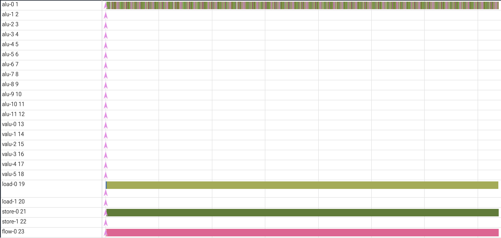
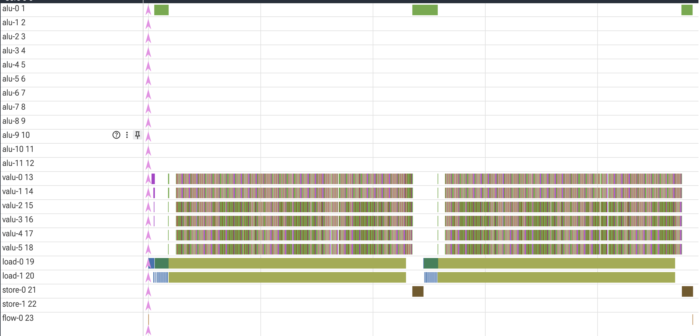
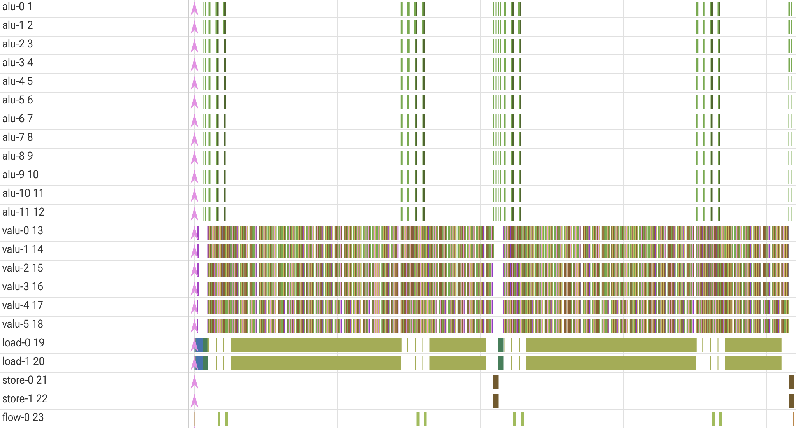
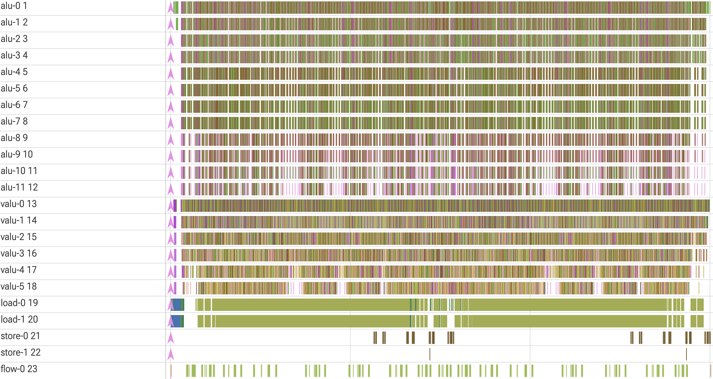
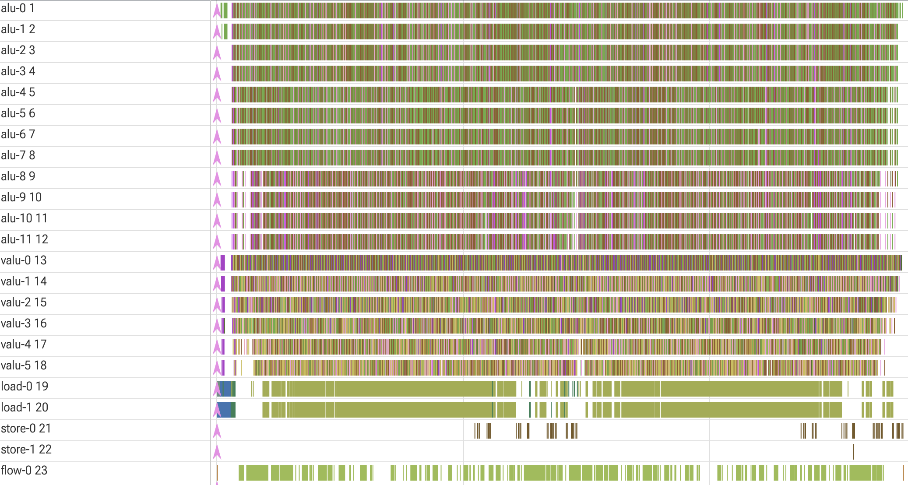
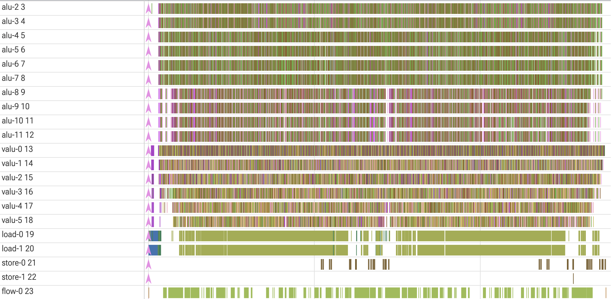
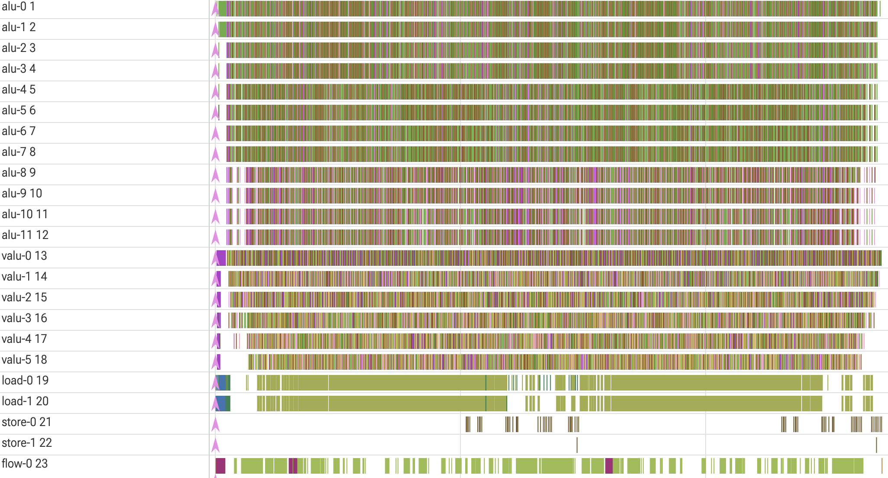

Anthropic Performance Take-Home
Beating the Hardest Performance Benchmark
Background
Anthropic released a modified version of the take home test it previously used on applicants: original_performance_takehome. The problem is essentially to output the least number of instructions possible to execute a given algorithm. Instead of other performance tasks which usually would have the programmer write the performant code directly like in C file, this problem has the programmer use Python to output a list of VLIW instructions that would themselves execute the logic of the problem.
This lets the programmer define with precision how exactly the outputted instructions use the given scratch space of 1536 registers, interact with memory, and balance utilization across various engines in the hardware model (alu, valu (vector alu), load, store, flow). There are a lot of details about the various operations that each engine supports, how to initialize scratch variables, and how to pack instruction slots together for ILP so I would recommend reading through the starter code yourself to get an in depth understanding. Otherwise, these specificities will only be explained if they come up in optimizations.
Problem
The work the generated instructions must execute is as follows. There are 256 “walkers” which all start at the root of a perfect binary tree with height 10. The walkers traverse through 16 iterations of doing some computation and moving down the tree one step (looping back to the root if they are at the bottom). Every walker and each node of the tree has a unique value associated with it and through the course of the program the walkers traverse the tree and update their unique walker value. Correctness of the algorithm relies on the memory locations storing each walker’s location on the tree and their unique value being correctly updated to the walkers’ final positions and values.
The computation done at each iteration updates their unique value based on the value of the tree node they are at. The walkers then go down one level of the tree going to either the left or right child based on the parity of their updated walker value. The walker value update computation consists of xoring with the tree node value and then doing a 6 stage hash on the result. As long as the hardware limitations (scratch limit, slots per engine per cycle limit, etc) are met, this traversal for the 256 walkers can happen in any way.
Debug Trace
Most helpful in the process of optimizing the generated instructions is the debug trace which shows the slots on each engine over time. Each slot is a single operation (think assembly op) and each engine has space for a particular number of slots per cycle (alu: 12, valu: 6, load: 2, store: 2, flow: 1). This aided in identifying bottlenecks and checking whether implemented optimizations worked as intended. Often when coming up with new optimizations, the trace would guide me into seeing where there was room for improvement either in terms of lack of utilization so I should schedule work better or seeing which engine is the bottleneck to offload it.
The below diagram is the trace of the starter code, notice how only 1 alu, 1 load, 1 store, and 1 flow engine are utilized.


Performance Benchmarks
The repo also listed many performance benchmarks that coders should aim for. The starter code outputs about 144k instructions, though the benchmarks show that there is A LOT of optimization possible. Each benchmark is the best score a particular AI model got (sometimes with a time constraint) because of course that is how Anthropic would judge these things 💀. The easiest benchmark is 2164 for the score Opus 4 got after many hours of working on the code and the hardest one was 1363 cycles which was Opus 4.5’s score after many hours with the additional help of pre-optimized starter code that outputted only 18.5k instructions. I made my goal to beat 1363 cycles.
Optimizations
I’ll show my optimizations by going through 7 versions of my code from least to most optimized. I do this so that it is clear how each version’s debug trace/performance evaluation gave me ideas for the next iteration.
V1 — 2425 cycles


The V1 algorithm is implemented through 2 repeated computations on 128 walkers. Each half splits the walkers into 2 groups of 64 whose executions are pipelined together. Pipelining was an attractive choice because roughly half of the work for each iteration of the algorithm is spent doing valu hashing and the other half is spent on the load engine to load in the next tree nodes. Therefore, when one group of 64 is utilizing the valu, the other group is loading which is pretty good for utilization. The green load (vloads) prologue and store epilogue which wrap the pipeline valu+yellow load (regular load) main work represent the loading of walker state into registers and final writeback into memory for a group of 128 walkers.
V2 — 2096 cycles


A couple optimizations have happened since V1. First, note that there are some small periodic gaps in the valu workload. This happened because valu ops could be shed by combining a few ops per iteration into fmas (fused multiply adds). This made the load engine the definitive bottleneck of the program and my priority in further optimization.
The load hacks I came up with rely on the fact the first few levels of the tree have very few nodes. Remember that in the load phase of a walker group, one load per walker is being sent out. For the root and the first level of the tree, though, this means that 64 loads are going out to either 1 node (root, 0th level) or 2 nodes total (1st level).
This redundancy can be partially optimized out by offloading to other less utilized engines namely alu and flow. The 64 loads to the root can be simply shoved to the alu by just generating 64 slots of node_val = root + 0 pseudo-loads which do the same work of getting the root node value into the 64 registers. The 1st level of the tree can be done with a vselect on the flow engine based on the walker’s index into the tree (look up how vselect is implemented for better understanding if needed).
Both optimizations require prefetching tree node values at the start of the program, but that overhead is minimal. These two optimizations can occur during rounds 0 and 1 and also 10 and 11 when the walkers loop back to the top of the tree. That’s why for each half of the program (full 128 walker execution), this gap in loads and increase in alu/flow utilization happens twice.
V3 — 1745 cycles

Another couple hundred cycles were shaved off by additional load optimizations for tree level 2 (4 nodes), smarter packing, and offloading work to the alu.
In order to generalize the load optimizations further, a slight restructuring had to happen. Instead of using the indices themselves to determine which node to vselect. Now a hierarchy of vselects existed based on the parities of the walker indices instead of the indices themselves. Note that the parities of the previous level were already calculated to determine whether a walker goes left or right down the tree which was useful. If this doesn’t make complete sense, think about if b_0 was the parity at the level 0 and b_1 was the parity at level 1, how could 3 vselects be chained together to identify which of the 4 level 2 tree nodes a walker ends up at.
The packing optimization came from waiting until the very end to pack slots into instructions all together at once. Previously, slots were packed per iteration which was necessary given that the total number of instructions used to be in the tens of thousands and any packing algorithm would be pretty slow. The new packing structure used an insertion-sort like pattern. Each slot is inserted by starting at the last/latest instruction and iterating backwards in time until a dependency violation is hit. The first instruction after the dependency violation that has space will take the slot in.
Lastly, basically any work done on the valu can be pretty easily moved over to the alu. Therefore, operations were incrementally pushed to the alu until the load between the valu and alu was balanced. It is important to note that given that optimizations may shift this balance, it was important to always rebalance this alu vs valu allocation for all subsequent changes.
The V3 optimizations can be seen in the debug trace. The additional load optimization caused thicker flow sections and the valu offloading caused the much more significant alu usage. The new packing can be seen with the dynamic overlap of the store epilogue with the main load+hash algorithm body and the overall lack of strict periodic gaps in the valu in V2.
V4 — 1503 cycles


At this point the general priority of offloading the loads to vselects on the flow engine stopped working. With each additional level of the tree optimized, the number of vselects needed more than doubled. Therefore, additional optimization would actually have made the overall code slower because the original loads would have been faster. Thus, another approach had to be taken to reduce cycle count.
In order to create ideas for V4, an analysis of what the V3 optimizations enabled as opposed to V2 had to be done. An important thing to notice about the previous V3 trace was that each engine has its operations packed fairly well. Gaps in utilization only arose when dependencies on other engines cause bottlenecks (when load is fully utilized valu+alu have gaps and vice versa). Further, with V3 compared to V2, there were much larger gaps where certain engines were underutilized. Previously, there were small per-iteration gaps, but with V3 these gaps were seen on the macro scale. Therefore, overlapping different walker groups together became an attractive idea. When one walker group is having a big load heavy era, another can be in an valu/alu intense era. If you deep it, this is the exact same motivation as pipelining (similar overlap walker groups idea), except instead of aiming to address micro per iteration gaps, now it’s for macro multi-iteration gaps.
Remember that the walkers were partitioned into 2 groups of 128 that were each split 2 groups of 64 walkers pipelined together. Let’s describe this partition of 128 walkers as 2*64 where 64 is the base walker group size. The following partitions of 128 walkers were tested for better utilization: 32*2+32*2 for 1578 cycles, 24*2+24*2+16*2 for 1545, and finally the chosen 16*2+16*2+16*2+16*2 for 1503 cycles.
Every partition was tested against various ways of staggering the start times of the different groups. This overlap offered much more consistent utilization across the whole program and indeed the V4 trace looks more homogeneous.
V5 — 1393 cycles


It was previously said in the V4 section that additional vselects would have a longer cycle count than the original loads they would be replacing and therefore would be a bad idea. However, with the overlap of various walker groups, even if there was a stall in one pair of groups that is in a vselect heavy era, another pair could pick up the slack and populate the other engines such that the stall was hidden. This made it possible to optimize out one more level of loads. Note how the bubbles in alu and valu workloads (indicating load bottlenecks) have been alleviated with this change. Now the V5 valu instructions in particular looked like a huge mammoth of operations.
Also, the performance was now within 30 cycles of the 1363 goal so the optimizations from this point on tended to get a bit more (read: extremely) desperate/fit to this exact workload.
V6 — 1379 cycles


14 cycles were cut by noticing that the code tracks the tree node index a walker is at even when the code is relying purely on the node parities (remember b_0 and b_1?) in those first few tree levels to move the walker. This useless tracking could be eliminated and when the load optimizations ended, the address could simply be reconstructed from the node parities. These reduced the valu/alu workload slightly which was the main bottleneck.
V7 — 1361 cycles


Many optimizations were implemented that only resulted in a 1-2 cycles gain 💀. The 2 ideas that caused a substantial reduction in cycles were using add_imms and overlapping slot generation for the previously sequential split of 128 walkers before they get packed by the packing algorithm.
Using add_imms on the flow engine caused a slight speedup. It was especially helpful in the setup code which could have its many const loads replaced with add_imms. It turned a bottleneck of 2 const initializations per cycle to 3. Add_imms could also be used a bit to replace an add on the alu or valu, but the flow engine is so less efficient at executing them and at that point the flow engine was already decently saturated anyways so speedup was miniscule.
The final optimization was overlapping the previously sequential groups of 128 walkers. Because of the staggered structure, some walkers from the second 128 group could begin before all the walkers of the first 128 group had finished. This flexibility already existed in the code and according to the packing algorithm there were no dependency violations stopping this. However, because the packing algorithm was greedy, the order in which these slots were emitted mattered. Therefore changing this slot emission order explicitly allowed for better overlap and the collapse of the little valu/alu bubble seen in the middle of V6’s trace.
Final Thoughts
Overall, I really enjoyed doing this challenge. It really emphasized the importance of utilization across engines, ILP, and scheduling work. Further, the algorithm lent itself to creative solutions like the vselect load optimizations. The debug trace was very nice, I wish writing performant code on actual hardware had that kind of ease, though the huge simplifications of the model hardware also helped.